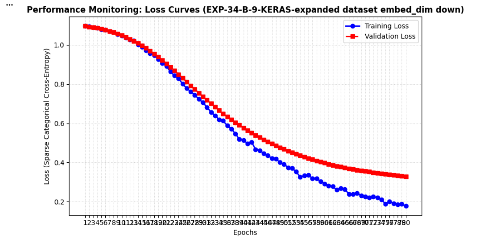
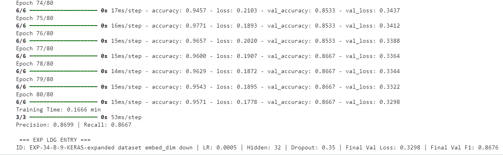

PT-P2: Neural Network Training (Hyperparameters)
More training data, not a smaller network, fixed the overfitting. Dropout then closed most of the gap that was left.
- Tools
- TensorFlow · Keras
- Data
- Ride-hailing text, 35 → 500 rows
- Runs
- EXP-001 to EXP-020
- Format
- IEEE reflective report
Summary
Trained a Keras feedforward network on a ride-hailing text dataset across 20 logged runs, using training and validation loss curves to diagnose overfitting and underfitting. Growing the dataset mattered more than any single hyperparameter; dropout then stabilized the final model.
- Validation accuracy 20% → 86% 35 rows (EXP-01) vs 500 rows (EXP-12)
- Generalization gap 1.54 → 0.13 Validation minus training loss, EXP-02 vs EXP-20
- Final F1 score 0.8275 EXP-20 with 0.30 dropout, 82% validation accuracy
- Logged training runs 20 Labastida-FFBP Training Log
Approach
This activity moved from the no-code tool of PT-P1 to a network written by hand in a Colab notebook, so every training decision could be inspected and changed.
- Data: a 35-row ride-hailing text set first, then an expanded 500-row set. Vocabulary capped at 300 tokens, sequences padded or cut to 15 tokens, split 70 / 15 / 15 into training, validation and test.
- Model: Embedding → GlobalAveragePooling1D → Dense (ReLU) → Dropout → Dense (softmax).
- Method: change one setting per run (hidden units, learning rate, epochs, dropout), then read the training and validation loss curves to decide the next run.
- FFBP
- Feedforward backpropagation: data flows forward through the layers, and the error flows backward to update the weights.
- Generalization gap
- Validation loss minus training loss. A large gap means the model memorized its training data instead of learning patterns that carry over.
- F1 score
- One number that balances precision (how often a predicted label is right) and recall (how many true labels were found). 1.0 is perfect.
Results
Three phases, each answering one question. The bars show how far apart training and validation loss were at the end of each phase: shorter is better.
| Phase | Run | Gap (validation − training loss) |
|---|---|---|
| 1 · Small data, 35 rows | EXP-02 | |
| 2 · Expanded data, 500 rows | EXP-08 | |
| 3 · Plus 0.30 dropout | EXP-20 |
Selected runs from the training log
| Run | Rows | Units · LR | Epochs | Val. loss | Val. acc. | Outcome |
|---|---|---|---|---|---|---|
| EXP-01 | 35 | 64 · 0.005 | 15 | 1.0781 | 20.0% | Baseline |
| EXP-02 | 35 | 64 · 0.005 | 30 | 1.5693 | 20.0% | Overfit |
| EXP-05 | 35 | 24 · 0.0001 | 30 | 1.0945 | 60.0% | Underfit |
| EXP-08 | 500 | 24 · 0.001 | 30 | 0.3180 | 85.0% | More data |
| EXP-12 | 500 | 12 · 0.0007 | 30 | 0.3592 | 86.0% | Best accuracy Best |
| EXP-14 | 500 | 12 · 0.0003 | 30 | 0.7154 | 86.0% | Learning rate too low |
| EXP-17 | 500 | 12 · 0.0003 | 60 | 0.3646 | 85.0% | Plateau |
| EXP-18 | 500 | 12 · 0.0003 | 70 | 0.3738 | 85.0% | Overfit again |
| EXP-20 | 500 | 12 · 0.0003 + dropout 0.30 | 70 | 0.3586 | 82.0% | Stable, F1 0.8275 Final |
Code versus the no-code baseline
No-code baseline (PT-P1)
90.80% accuracy and 88.61% F1 in later formal testing. Fast to build, but it gave no way to see why performance stalled.
Code (this activity)
Best validation accuracy 86%. Loss curves showed where the model overfit (epoch 60 to 70) and which change fixed it.
From the notebook




What I learned
Running the same underlying problem through both a no-code tool and hand-written Keras code made the mechanics of overfitting and underfitting concrete rather than abstract. The clearest lesson was that no amount of architectural or learning-rate tuning rescues a model starved of data — expanding from 35 to 500 rows mattered more than any single hyperparameter choice — while dropout regularization was what finally closed the gap once enough data was in place. Having to justify every configuration change against a validation-loss curve, instead of trusting an automated score, is the habit I want to carry into the rest of this course and into the capstone project.
Technical details Phases and code-to-theory mapping
The three phases
- Phase 1, small dataset (EXP-001 to EXP-007, 35 rows). Training loss fell to 0.0291 while validation loss rose to 1.5693. Shrinking the hidden layer from 64 to 32 to 24 units did not fix it. Lowering the learning rate to 0.0001 (EXP-005) tipped the model into underfitting instead (training loss 1.0889, validation loss 1.0945).
- Phase 2, expanded dataset (EXP-008 to EXP-014, 500 rows). Validation accuracy reached 86.00% with F1 0.8698, and the gap fell from 1.5402 to 0.2942: the most decisive change in the study.
- Phase 3, epochs and regularization (EXP-015 to EXP-020). Validation loss plateaued around epoch 60 and began rising by epoch 70 (0.3646 to 0.3738). Adding 0.30 dropout in EXP-020 settled training at 0.2238 and validation at 0.3586 (F1 0.8275).
Where each step happens in the notebook
- Feature extraction: the Embedding and GlobalAveragePooling1D layers (Cell 14).
- Forward pass: the Dense, Dropout and softmax layers (Cell 14).
- Loss: sparse categorical cross-entropy (Cell 16).
- Backward pass: automatic differentiation and Adam weight updates per mini-batch inside
model.fit()(Cell 18).
Optimizer choice (Adam vs. SGD), learning rate (tuned from 0.0050 down to 0.0003), loss function and per-layer dropout could all be set directly in code, none of which the no-code tool exposed. No-code suits quick feasibility checks; code is what you need to debug a model that fails.
Files
- Reflective report (IEEE format)PDF · prelims-03-reflection.pdf Open PDF
- Training notebookIverson_Neural_Network_Training_Testing.ipynb [NOTEBOOK URL]
- Datasetsride_hailing_dataset.csv · ride-hailing-dataset-expanded.csv [DATASET URL]
- Training logLabastida-FFBP Training Log, all 20 runs [TRAINING LOG URL]